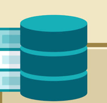

امنیت پایگاه داده و نقش سرور در برنامههای تحت وب
اطلاعات مقاله:
- نویسنده : N.P
- تاریخ انتشار : August 2026
- مدت زمان مطالعه :6 دقیقه

مقدمه
امروزه بسیاری از نرمافزارها و وبسایتها برای ذخیره و مدیریت اطلاعات از پایگاه داده استفاده میکنند. از فروشگاههای اینترنتی گرفته تا سامانههای آموزشی، همگی برای نگهداری اطلاعات کاربران به یک سیستم پایگاه داده متکی هستند. در کنار پایگاه داده، سرور و مرورگر نیز نقش مهمی در انتقال و نمایش اطلاعات دارند. آشنایی با ارتباط میان این سه بخش، به توسعهدهندگان کمک میکند برنامههای سریعتر، امنتر و قابل اطمینانتری طراحی کنند.
پایگاه داده چیست؟
پایگاه داده مجموعهای از اطلاعات سازماندهیشده است که امکان ذخیره، جستجو، ویرایش و حذف دادهها را فراهم میکند. زمانی که کاربر در یک سایت ثبتنام میکند یا سفارشی را ثبت میکند، اطلاعات او معمولاً در پایگاه داده ذخیره میشود تا در مراجعات بعدی قابل استفاده باشد.
کاربرد های پایگاه داده :
- ذخیره اطلاعات کاربران
- مدیریت محصولات فروشگاه
- نگهداری سفارشها
- ثبت گزارشها
- مدیریت موجودی کالا
سرور چه وظیفهای دارد؟
سرور رایانه یا نرمافزاری است که درخواست کاربران را دریافت کرده و پاسخ مناسب را ارسال میکند. زمانی که کاربر آدرس یک وبسایت را در مرورگر وارد میکند، درخواست ابتدا به سرور ارسال میشود. سپس سرور اطلاعات موردنیاز را از پایگاه داده دریافت کرده و نتیجه را برای مرورگر ارسال میکند.
مراحل ارتباط کاربر با سایت
- کاربر آدرس سایت را وارد میکند.
- مرورگر درخواست را ارسال میکند.
- سرور درخواست را پردازش میکند.
- در صورت نیاز، اطلاعات از پایگاه داده خوانده میشود.
- پاسخ برای مرورگر ارسال میشود
مرورگر چه نقشی دارد؟
مرورگر نرمافزاری است که صفحات وب را نمایش میدهد. مرورگرهایی مانند Chrome، Firefox و Edge پس از دریافت اطلاعات از سرور، کدهای HTML، CSS و JavaScript را پردازش کرده و صفحه نهایی را به کاربر نمایش میدهند.
| بخش | وظیفه |
|---|---|
| مرورگر : | نمایش صفحات وب |
| سرور: | پردازش درخواست ها |
| پایگاه داده: | ذخیره اطلاعات |
نتیجه گیری :
پایگاه داده، سرور و مرورگر سه بخش اصلی بیشتر برنامههای تحت وب هستند و هر کدام وظیفه مشخصی بر عهده دارند. شناخت نحوه ارتباط میان این اجزا و رعایت اصول امنیتی، باعث میشود برنامهها عملکرد بهتری داشته باشند و اطلاعات کاربران با امنیت بیشتری نگهداری شوند.
امنیت زمانی ارزشمند است که پیش از وقوع مشکل به آن توجه شود، نه پس از از دست رفتن اطلاعات.